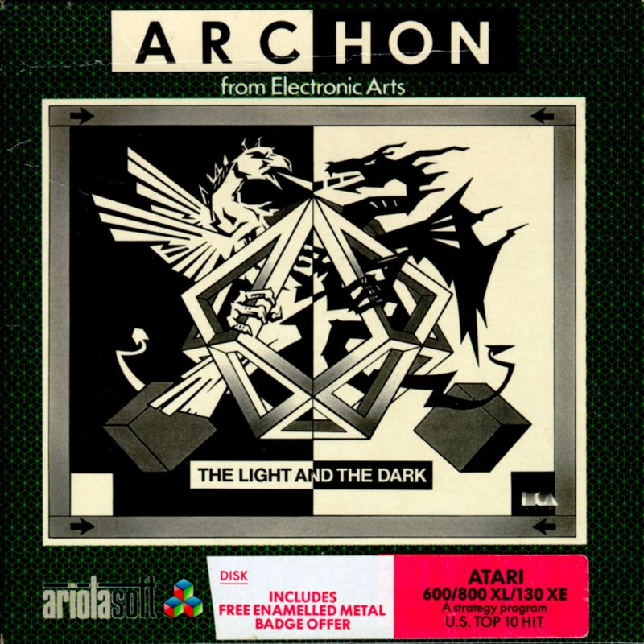

Archon: The Light and the Dark
Archon: The Light and the Dark is a strategic board game released in 1983 by Free Fall Associates. Combining elements of chess and action games, players control fantasy creatures to conquer the board. Each piece has unique abilities, and battles between opposing pieces occur in real-time combat. With its innovative gameplay and captivating graphics, Archon received critical acclaim and became a classic in the genre of strategy games.